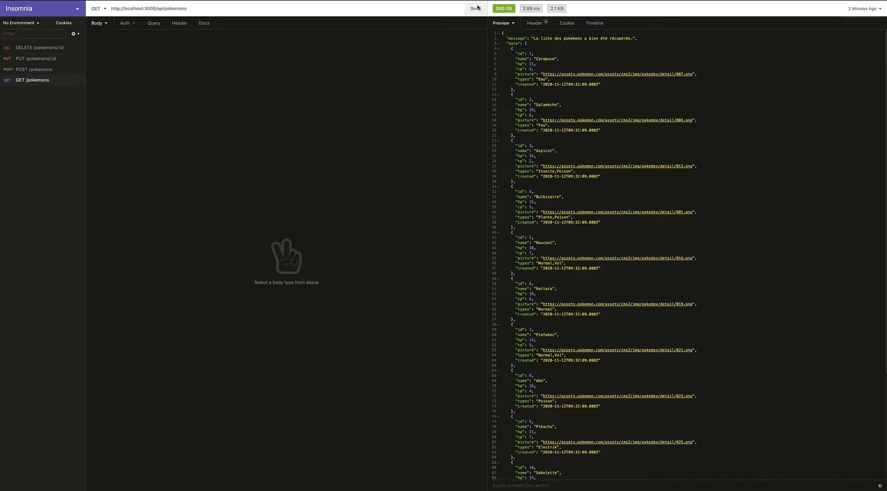
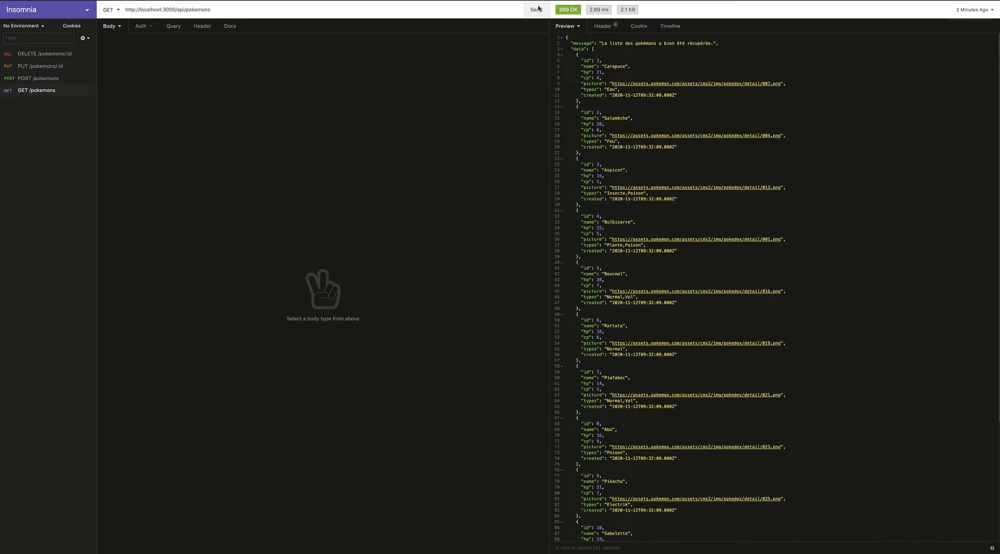
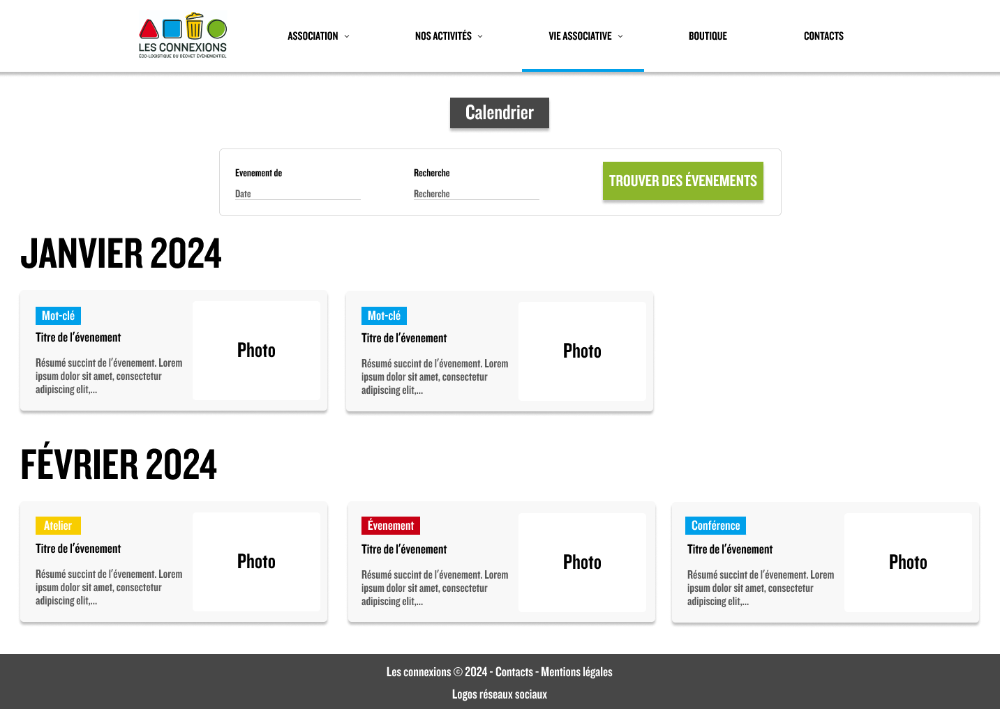
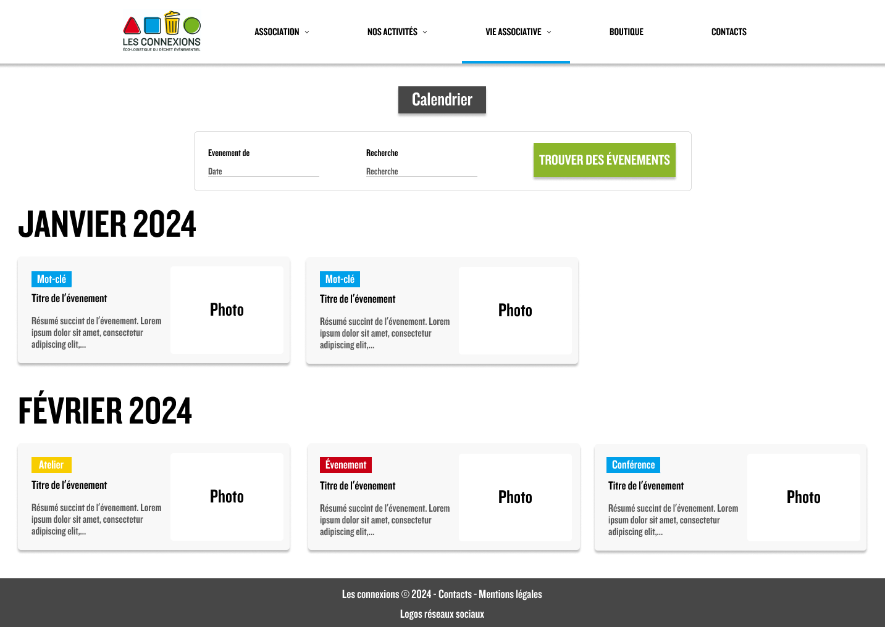

Tommy Epal
Développeur Web Full Stack

Passionné par deux domaines distincts - la nature et l'informatique -
j’ai entamé mon parcours professionnel dans les sciences de la terre
et de l'environnement. Titulaire d'un master 2 avec mention, j'ai
consacré quelques années à étudier les phénomènes géologiques avant de
donner une nouvelle orientation à ma carrière en me plongeant dans le
monde fascinant du développement web.
Suite à une année d'auto-formation intensive, j'ai acquis des
compétences solides dans le développement frontend, tout en
établissant des bases dans le domaine du backend. Aujourd'hui, en tant
que développeur web full stack, je m'épanouis pleinement dans la
création de projets innovants. Mon objectif est de continuer à allier
mes deux passions, en contribuant activement à des projets qui
intègrent les avancées technologiques tout en respectant
l'environnement qui m'inspire tant.
Prestations
Solution Simple
Une solution rapide et efficace pour vos besoins de base en développement web.
Solution Personnalisée
Une solution sur mesure adaptée à vos exigences spécifiques et à vos projets complexes.
Pour qui ?
- Petites entreprises, entrepreneurs ou indépendants avec un budget limité.
- Idéal pour les sites vitrines, blogs ou pages de présentation avec peu de mise à jour ou de personnalisation complexe.
Ce que je propose
- Création de sites rapides, élégants et professionnels grâce à WordPress.
- Mise en place d’un thème adapté à votre activité et personnalisable.
- Intégration des fonctionnalités essentielles (formulaires, galeries, pages de contact, etc.).
- Optimisation de la performance et du SEO pour une visibilité accrue.
- Formation de base pour gérer votre site en autonomie après livraison.
Avantages
- Solution rapide et économique.
- Idéal pour un lancement rapide de votre activité en ligne.
Pour qui ?
- Startups, PME ou projets nécessitant des fonctionnalités complexes et un haut niveau de personnalisation.
- Idéal pour les plateformes web interactives, applications web ou sites nécessitant une intégration avancée avec des API ou des bases de données.
Ce que je propose
- Développement sur mesure avec la stack MERN (MongoDB, Express, React, Node.js).
- Création d’un design entièrement personnalisé en fonction de vos besoins.
- Développement de fonctionnalités spécifiques (espace membre, e-commerce, tableau de bord interactif, etc.).
- Gestion avancée des données grâce à une base MongoDB sécurisée et performante.
- Accompagnement sur le long terme : maintenance, évolutions et mises à jour.
Avantages
- Un site ou une application unique, parfaitement adapté à vos besoins.
- Idéal pour des projets nécessitant des performances élevées et une évolutivité.
Mes Projets
Gestionnaire de Backlog Jeux Vidéo

Site e-commerce
API REST Pokémon

Site Vitrine WordPress - Luthière

Les Connexions - site associatif
Projet Symfony/PostgreSQL
Contact
Disponible pour les opportunités en entreprise et en Freelance.
Vous avez un projet passionnant pour lequel vous avez besoin d'aide ?
Envoyez-moi un e-mail ou remplissez le formulaire ci-dessous !
 


 
